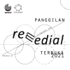
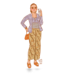
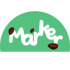
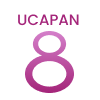

<!-- /* .portofolio-section {
    display: flex;
    flex-direction: column;
    justify-content: center;
    align-items: center;
    margin-top: 3rem;
    margin-bottom: 3rem;
  }
  .portofolio-section > h3 {
    font-weight: 700;
    font-size: 35px;
    margin-bottom: 1rem;
  }
  .portofolio-section > p {
    color: #5d5b5d;
    margin-bottom: 2rem;
  }
  .portofolio-container {
    width: 80%;
    display: flex;
    justify-content: space-around;
    align-items: center;
    flex-wrap: wrap;
  }
  .portofolio-member > img {
    width: 200px;
  }
  .portofolio-member {
    display: flex;
    flex-direction: column;
    justify-content: center;
    align-items: center;
  }
  .portofolio-member > h4 {
    color: #FF577F;
    font-weight: 700;
    margin-top: 5px;
  }
  .portofolio-member > p {
    color: #5d5b5d;
  } */


   -->


   <!-- portofolio -->
    <!-- <section class="portofolio-section" id="portofolio">
      <p class="sub-heading">My Project</p>
      <h1 class="heading">Portfolio</h1>
      <div class="portofolio-container">
          <div class="portofolio-member">
            
            <h4>Serrum</h4>
            <h4>RemidiaL</h4>
            <p>RemidiaL merupakan challenge yang <br>
              saya dapatkan dari Skilvul. Pada tugas <br>
              ini saya dan teman kelompok mendesain <br> 
              UI/UX untuk website RemidiaL.
            </p>
          </div>
          <div class="portofolio-member">
            
            <h4>“ENTIBI”</h4>
            <h4>E-FASHION WITH IN AR TECHNOLOGY FOR NTB INSPIRATION</h4>
            <p>Pada mata kuliah E-Bisnis saya <br>
              dan rekan setim membuat sebuah sistem <br>
              informasi yang dapat digunakan untuk <br>
              mengembangkan bisnis UMKM di NTB.</p>
          </div>
          <div class="portofolio-member">
            
            <h4>MARKER </h4>
            <h4>FARMER COFFEE TRACKING</h4>
            <p>Pada GEMASTIK 2022 kemarin saya <br>
              dan rekan setim mengikuti pada <br>
               kategori desain pengguna.</p>
          </div>
          <div class="portofolio-member">
            
            <h4>UCAPAN</h4>
            <h4>Aplikasi Kesehatan Mental Perempuan dan Anak Berbasis Mobile</h4>
            <p>Pada mata kuliah Sistem Informasi <br> 
              saya dan rekan setim membuat sebuat aplikasi<br>
              kesehatan mental yang berfokus pada perempuan dan anak.
            </p>
          </div>
          <article>
            <br><br>
          <div class="button">
            <a href="https://drive.google.com/file/d/1IedVzzlsOW4AjLjUJlXAK-zQVuwLuU65/view?usp=sharing" class="btn">CLICK FOR MORE</a>
          </div>
          </article>
        </div>
      </section> -->